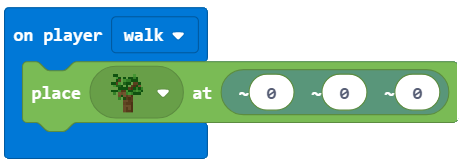

Projektni zadatak - Koliko ima stabala?¶
Računalu su potrebni spremnici za spremanje brojeva, tekstova i drugih informacija, tako da na temelju tih podataka može donositi neke odluke. Na primjer, ako želimo napraviti vremensku prognozu, potrebne su nam varijable poput temperature, doba dana, dana u tjednu, količine oborina, itd.
Varijabla se može shvatiti kao prostor u memoriji računala, nešto poput okvira u koji, tijekom izvođenja programa, možemo pohraniti neke privremene vrijednosti. (npr. Broj stabala zasađenih u svijetu).
Svaka varijabla pohranjuje određenu vrstu informacija. Prvi put kada ga koristimo trebamo definirati njegovu vrstu (broj, niz (tekst - niz alfanumeričkih znakova), logički (true, false)). Od tog trenutka do kraja programa u tu varijablu možemo pohraniti samo određene vrste podataka.
Varijable imaju imena. Kad želimo koristiti vrijednost varijable, dovoljno je upotrijebiti njeno ime.
Važno: Odabir pravog imena varijable olakšava razumijevanje programa koje smo kreirali. Na primjer, ako želimo pohraniti broj života igrača u igri, možemo imenovati varijablu number_lives, koja bi bila bolja od živ ili broj. Imena varijabli sadrže slova, brojeve i posebni znak _(donja crta), i uvijek moraju započeti slovom.
U prethodnom primjeru vidjeli smo da je položaj objekta (lik, svijet) posebna vrsta varijable koja sadrži tri broja koja opisuju određeno mjesto u trodimenzionalnom prostoru. Ti se brojevi nazivaju X, Y i Z koordinate.
Koristit ćemo primjer programa koji broji broj stabala koje je lik zasadio dok se kreće po svijetu, kako bismo pokazali kako možemo stvarati i koristiti varijable.
Faza 1.
Razmišljajući o zadatku: Drveće se sadi krećući se svijetom. Svaki put kada se zasadi stablo, broj stabala na svijetu raste.
Faza 2
Otvorite Code Builder (pritiskom na tipku C); pojavit će se prozor za uređivanje u koji možete slagati blokove.
Za brojanje zasađenih stabala nadogradit ćemo program iz projekta Sadnja drveća:
Moramo stvoriti varijablu Brojač, koji će pohraniti broj zasađenih stabala.
Varijabla se kreira na sljedeći način, u kategoriji Variables (1), kliknemo na gumb Make a variable (2) i upišite ime te varijable u polje (3), u našem slučaju Brojač . Klikom na gumb OK (4), stvorili ste varijablu (5):

Početna vrijednost varijable Brojač je 0.
Postavljanje početne vrijednosti (resetiranje na početnu vrijednost) definira se blokom  . To znači da će Minecraft svaki put kada se pokrene program postaviti vrijednost brojača na 0 i brojanje stabala može započeti.
. To znači da će Minecraft svaki put kada se pokrene program postaviti vrijednost brojača na 0 i brojanje stabala može započeti.
Iz kategorije  izaberemo blok . Izabrani blok ćemo koristiti kao “okidač” za resetiranje varijable Brojač.
izaberemo blok . Izabrani blok ćemo koristiti kao “okidač” za resetiranje varijable Brojač.
Iz kategorije  povucite blok
povucite blok  Brojač to
Brojač to 0:

A sada ćemo nadograditi program za sadnju stabala:
dodavanjem dijela koji će se registrirati kad se promijeni vrijednost varijable Brojač.
Sada trebamo koristiti varijablu Brojač, čija je vrijednost postavljena na 0. Vrijednost ove varijable mijenjat će se (povećavati za jedan) svaki put kada lik postavi blok, tj. posadi stablo.
Za to ćemo koristiti blok  iz kategorije
iz kategorije Varijable. Povući ćemo ovaj blok na dio koda koji se koristi za postavljanje (sadnju) stabala, kao i na blok koji ćemo koristiti za prikazivanje (recimo) koliko je stabala posađeno.
Izgled koda nakon promjena:

Za kraj, kako bismo vidjeli koliko je drveća zasađeno, uvodimo blok  u koji ćemo povući blok
u koji ćemo povući blok  . U ovaj ćemo blok umetnuti
. U ovaj ćemo blok umetnuti  .
.
Izgled koda:

Izgled programa za brojanje stabala:

Faza 3
Testiranje programa.
Kliknite na gumb  .
.

Nakon što smo testirali program, možemo zaključiti da je učinio što smo htjeli. Broji koliko je drveća zasadio lik kretanjem po svijetu.